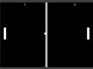

Games Development Blog
Media Task 3(B)
=======Blog Moved
Blog moved to :
herePosted on 11 November, 2014 by Lewis Dick
Task 3(A)
Design Element |
|
| Game title/theme/genre | Slimy Predicament Platformer |
| Target Audience | 9+ |
| Game Platform | PC that is running windows 7 and newer - must have at least 2GB of ram and a 2GHz CPU for it to run smoothly. |
| Game purpose/objective/plot | The player starts off on the first level and will have to work their way through the different levels. Dying does not end the game, but instead adds to a counter. Complete all of the levels and finish the final boss level, while collecting as many points as possible with as few deaths as possible Jeb fell down a hole into a cave, and is on a quest to get to the exit of the cave, which is protected my a multitude of traps. |
| Characters | Jeb is a small green block of slime. He is the playable character in the game. His aim is to get to the end and escape the cave that he fell into. He is able to cling onto dirt walls. |
| User Interface Requirements | The user interface will be easy to navigate, and allow the use of a mouse to click on the buttons. It must also fit in with the main design aesthetic of the game. A mouse will be used to navigate the menus within the game. While the character will be controlled using keys on the keyboard. Specifically the keys: left arrow, right Arrow, up arrow and the spacebar |
Posted on 10 March, 2015 by Lewis Dick
Task 2(c)
Time
I have to finish my game before the end of March, so that it is finished in time for the game showcase that is taking place.
Technical
Gamemaker only has the ability to import .mp3 and .wav files, so all audio used must be converted to those formats.
Quality
I want the game to appear as clean as possible, with graphics and sounds that suit the game well. So when searching for or creating graphics and sound i aim for them to be as high quality as possible.
Posted on 9 March, 2015 by Lewis Dick
Task 2(b)
Maze Game Character -
Charas-project.netWall Texture -
Sourced from the gamemaker engine.
Background Music -
Ericskiff.comPosted on 9 March, 2015 by Lewis Dick
Task 2(A)
>>>>>>> origin/gh-pagesNo |
Asset |
Modifications |
Original File Name |
Modified File Name |
| 1 | Jumppad Sound | Normalised sound and exported .wav to .mp3 | Jumppad.wav | Jumppad2.mp3 |
| 2 | Saw | Created an animation by rotation in gamemaker | saw.png | saw_animation.png |
| 3 | Spikes | Applied frosted glass and Dents effects in paint.net | spikes.png | spikes2.png |
| 4 | Background | Added noise. Applied pixelate filter and twist filter. | level2.png | level2_new.png |
| 5 | Death Noise | Applied WahWah effect to sound and converted from .wav to .mp3 | spikedie.wav | spikedie_new.mp3 |
| 6 | Gem | Created colorize animation that would make the gem shimmer | spr_gem.png | spr_gem_strip.png |
Posted on 17 March, 2015 by Lewis Dick
Media Task 3(A)
File Name |
Sourced |
Created |
| Saw.png | X | |
| Jump.wav | X | |
| welcome.png | X | |
| Jumpshot.mp3 | X | |
| player_sprite.png | X | |
| stone_normal_red.png | X |
Posted on 17 March, 2015 by Lewis Dick
Media Task 2(C)
Time
I have to finish my game before the end of March, so that it is finished in time for the game showcase that is taking place.
Technical
Gamemaker only has the ability to import .mp3 and .wav files, so all audio used must be converted to those formats.
Quality
I want the game to appear as clean as possible, with graphics and sounds that suit the game well. So when searching for or creating graphics and sound i aim for them to be as high quality as possible.
Posted on 17 March, 2015 by Lewis Dick
Media Task 2(B)
Maze Game Character -
Found hereWall Texture -
Texture found within the gamemaker engine.
Background Music -
Found herePosted on 17 March, 2015 by Lewis Dick
Design Task 3(B)
Slimy Predicament
Narrative Design
While on an adventure, Jeb the main character managed to fall down a hole into a hidden cave that is filled with gems and traps. To escape the cave Jeb has to get to the other side of the cave and get to the exit that is protected by many traps. The cave itself has been booby-trapped by Walter the worm who was trying to protect the treasure that he has collected over the years. The worm has dwelled in the cave for 108 long years, and has gone undisturbed for all that time. The game is a platformer that is suitable .........
Posted on 16 March, 2015 by Lewis Dick
Design Task 3(A)
Design Elements |
|
| Game title/theme/genre | Slimy Predicament / Platformer |
| Target Audience | 9+ |
| Game Platform | PC that is running windows 7 and newer - must have at least 2GB of ram and a 2GHz CPU for it to run smoothly. |
| Game purpose/objective/plot | The player starts off on the first level and will have to work their way through the different levels. Dying does not end the game, but instead adds to a counter. Complete all of the levels and finish the final boss level, while collecting as many points as possible with as few deaths as possible Jeb fell down a hole into a cave, and is on a quest to get to the exit of the cave, which is protected my a multitude of traps. |
| Characters | Jeb is a small green block of slime. He is the playable character in the game. His aim is to get to the end and escape the cave that he fell into. He is able to cling onto dirt walls. |
| User Interface Requirements | The user interface will be easy to navigate, and allow the use of a mouse to click on the buttons. It must also fit in with the main design aesthetic of the game. A mouse will be used to navigate the menus within the game. While the character will be controlled using keys on the keyboard. Specifically the keys: left arrow, right Arrow, up arrow and the spacebar |
Posted on 11 November, 2014 by Lewis Dick
Media Task 2(A)
Media Asset |
Captured |
Created |
Sourced |
Description |
Time |
| Laser Sound | X | A loud, sharp sound that mimics the sound of a laser being fired. Played when a gun is shot. | 10 | ||
| Explosion Sound | X | A loud, rumbling sound that sounds like an explosion. Played when an enemy is blown up | 10 | ||
| Space Invader Sprite | X | A sprite that fits in with the design of the original space invaders game, that uses the same style of art. | 10 | ||
| Game Over Screen | X | A simple end of game screen that appears once the player has died etc. | 15 | ||
| Maze Game Character | X | An animated walking chicken that fits into the world of the maze game. | 10 | ||
| Wall Texture | A texture to show walls during the maze game, that fit in with the design aesthetic. | 5 |
Posted on 30 January, 2014 by Lewis Dick
Design Task 2(C)
Operational rules of Pac Man |
Evaluation |
| If the player collides with one of the ghosts the player loses a life. | If the ghosts did not cause the player to lose a life then the game would not be difficult at all, and the objective would not be hard. The gameplay would become boring as there would be no challenge to the game. |
| A maze of walls keep the player going in certain directions, the player can’t walk through the walls. | If the player did not collide with the walls of the maze then the game would become much easier as the player could avoid the ghosts much easier and make it easier for the player to collect the cherrys and pellets to complete the game faster. |
| If Pac-man eats a power berry it gives it the ability to eat ghosts. | If the power berry did not allow Pac-man to eat the ghosts then the games difficulty would rise as the only option to avoid dying would be to run away. The way the game is played would change, there would be less options for players to escape ghosts. |
Posted on 12 January, 2014 by Lewis Dick
Design Task 1(C)
Investment (Capital) Layer
In the Investment stage, the game creators will have to look for investors to put money into the game. However when doing this there are multiple areas that an investor must look at before backing the game. One of these areas are the risks that will be involved when investing in the game. They must consider if the game will be profitable, even with other problems such as .........
Posted on 18 December, 2014 by Lewis Dick
Design Task 2(B)
Bastion
Narrative Design
The game makes use of short cut-scenes to introduce new characters as they come into the game, where there is a short amount of dialogue from the new NPC. The game relies on voice overs to convey the story of the game, as well as setting the mission objectives. This is done by the first NPC that is met, and he continues to do the voice overs until the game has ended. The only voice that is heard in the game is the voice of the narrator, all of the other characters interact through text dialogue. Each new item that is .........
Posted on 17 December, 2014 by Lewis Dick
Design Task 2(A)
Target Audience
When creating a game, one of the most important things to look at is what the target audience for the game will be. The game developer will have to take into consideration what their target demographic likes etc.
One of the choices that will be made is whether the game will be marketed towards casual gamers, or hardcore gamers. If it is aimed towards casual gamers then the games difficulty may have to be taken into consideration, as generally casual gamers may not be as good .........
Posted on 16 December, 2014 by Lewis Dick
Design Task 1(A)
Gigabyte R9 280x Windforce 3X rev 3.0
Specifications :-
- Core Clock: 1000 Mhz, with boost 1100 Mhz
- VRAM: 3072 MB (3GB)
- Memory Bus: 384 bit, allowing for a bandwidth of 288 GB/s
- Max Resolution: 4096 x 2160
- 3D Capable: Yes
The 280x has a total of 3GB of on-board video ram, this allows for gamers to play games at higher resolutions. This is because at high resolutions games demand more VRAM, with even 1080P using just under 2GB of VRAM in some cases. 3GB would allow gamers to play at .........
Posted on 15 December, 2014 by Lewis Dick
Task 1(B)
Virtual Reality Technology
The Oculus rift allows for the user to “be in a game world”. It uses one screen for each eye. Each one has a resolution of 960×1080 on version 2. The version one had a lower resolution. Each one of the screens is 60Hz allowing to display 60 fps. Higher resolution screens were added due to the fact the screens are so close to the user’s eyes, meaning that if the screens use a low resolution then they will be able to see the visible pixels, thus destroying some of the immersion that the Oculus Rift allows in games. It uses a sensor to .........
Posted on 10 December, 2014 by Lewis Dick
Design Elements Report
We are currently working on design report, in which we discuss the different design elements inside games. For this report I have chosen two game. These two games are Bastion and Borderlands 2. These games are not very similar and offer different selling points that will keep the player from putting the game down. I will be focusing on 4 key areas; Narrative, Character design, Level design and Gameplay. I will go into depth on how these different aspects are used within the game.
Posted on 03 December, 2014 by Lewis Dick
Creating Space Invaders
Currently I am working on a spcae invaders game, that uses the original sprites, as well as some new custom aliens that have been designed me during games development. As well as all the sprites that I have made, i have also been working on a UI for the game, including a title screen and win/lose screen.
Posted on 03 December, 2014 by Lewis Dick
Space Invaders
I have began work on making a space invaders styled game recently. However currently i have only got the sprites for the aliens etc. made. These sprites are also animated, which will be shown in a video in a later post. Once I have access to a screen capture software. A non animated screen cap can be viewed below.
Posted on 20 November, 2014 by Lewis Dick
More brickbreaker updates
Today we discussed what makes a user interface good, and things that need to be considered at the user interface design stage.
These are the points we agreed on being essential to a user interface:
- User Friendly
- Customisable
- Gltich Free
- Controls are intuitive
- Allows the use of multiple types of input device. i.e xbox controller or keyboard
- Aesthetically pleasing
- Appropriate sounds in-game
- Surround sound capabilities
- No slowdown / Lag
Posted on 20 November, 2014 by Lewis Dick
Character Design, Level Design and Game-play/Mechanics.
Throughout this week we have been working through a couple of sections, that will eventually end with a big report. The first topic discussed at the start of the week was character design, during this lesson we discussed why it is important and how it effects the gameplay and narrative of the game. Secondly we discussed Level Design, and what level design involves. Also discussing why it is important to have good level design, and the different parts that make up a level. Thirdly we talked about the Gameplay/Mechanics within a game, this included what is involved in them.
Posted on 20 November, 2014 by Lewis Dick
Pong!
I have been working on a version of pong. The game works in a very similar way to the brick-breaker game. However the pong game doesn't allow two players to head to head with each other, similar to a game of hockey. The game is in a fully functioning state and also has working scores for the two players. A screenshot is included below.

Posted on 14 November, 2014 by Lewis Dick
Brickbreaker Demo
The html5 video posted below shows the game in its current working state, this includes power ups. I am currently working on adding more levels to the game. As well as changing the art style that is in the game, as the current bricks will soon be replaced with more simplistic ones. Soon i will upload a playable version of the game that can be downloaded and run on another computer, although that will be done whe n the game is pretty much finished.
Posted on November 11, 2014 by Lewis Dick
Video Game Narrative
Today we looked at the narrative that is used in video games, and how it effects choices made in the design stage. The Narrative of a game includes the storyline, the objective, the characters and the theme ties.The narrative effects can effect the length that a game will be as well as many other important factors.
Posted on November 10, 2014 by Lewis Dick
Brickbreaker Graphics Update
I have been working on some of the graphics that are used in the brick breaker game to make them appear more professional. Slowly i will be updating each of the sprites and objects to match up with this new graphical style. The new start, win and lose screens can be seen below.
Posted on November 2, 2014 by Lewis Dick
More brickbreaker updates
The ball now bouncies off of the paddle in a better way, allowing for the place it hits on the pad to effect the direction in which the ball moves after bouncing off of it. I have also began to attempt to implement music. The nudge feature has been removed as it is no longer needed after i put in an update which added gravity to the ball, this stops it fron continiously bouncing back and forth horizontally. So that bug has been fixed. I am still working of implementing the special brick features , currently there is only one power-up. Later on i plan to implement other features, including a brick that when hit will make your paddle smaller.
Posted on 16 October, 2014 by Lewis Dick
Brickbreaker Update
Today i added a couple of new features to the brick breaker game. Now a start screen is included along with a win/lose screen. A special power block has been implemented, although it is not completely working, as once you have collected the power up it wont change back. Finally I have started to work on a nudge function, that only allows the player to nudge the ball twice in the game, although it is not completely working yet. I decided to implement this feature, as sometimes due to the way the ball bouncies off of objects in the game, it can become stuck in the loop of bouncing back and forth.
Posted on October 14, 2014 by Lewis Dick
Brickbreaker
I have been working on a brick breaker game. So far i have most of the functions of the game working, although i still have to implement a life system, power ups and switching level. Here are two of the levels i currently have in the game, more levels will eventually be made.
Posted on October 9, 2014 by Lewis Dick
Legislation
Some media assets are covered by copyright, this can include things such as sounds/music and graphics/ artwork. To be able to use these you must seek permission from the original creator or pay the required amount. Otherwise the game creator will be breaking copyright law. Some game creators will be tempted to use copyright material without the permission. This has become fairly common on the internet where mp3 files are commonly shared. There is a large amount of legislation to cover these illegal actions, which will allow the creators to claim infringement against the people.
One of the legislation put in place is called the Digital Economy Act 2010. Part of this legislation aims to make the action of tracking down the infringers easier, this would be done by using the IP Address of the computer being used to identify the owner. Once the infringer has been identified then they can be prosecuted for breaking the law. Although most commonly repeat copyright infringers are the ones that get sued. As well as the previous mentioned actions, the Digital Economy Act 2010 also allows for the owner of the content to get sites blocked from search engines due to having a large amount of copyright material that has been used without permission. The copyright holders will also work with Internet service providers to help block the websites; an example of this is the blockage of the website thepiratebay, which after long discussions with ISPs was blocked. However this does not always work correctly as all a website has to do is change its domain name, and then it is unblocked.
Due to the legislation that was put in place, the game creator must be careful where and what media assets they use in their game. This means that the creator of the game will either have to look for copyright free assets or buy the rights to use the certain asset. Many assets can be found for use under creative commons, this allows the licensing of some images to allow others to use them for their work legitimately. Other ways of acquiring the assets could be asking the original creator for the right to use them, although the original creator can say no. The final legal option that a game creator has to get assets is to buy them off of a site that sells them for use. Legislation throughout different countries can also differ. Some countries ban certain content from being used, these come under censorship laws. One example of this is in Germany. In the recently released Wolfenstein game any reference to the Nazis was removed from the German version of the game, due to the sensitive nature of the subject in Germany.
Posted on October 7, 2014 by Lewis Dick
Assets for comparison
The main characters from bounty 1 and bounty 2
Bounty 1 uses a 2D character which works well with the main design style of the game. The characters design is based around the classic image of an old fashioned detective, which works well within the main theme of the game. The character is able to move up, down, left and right, however does not move diagonally. The walking animation used by the game makers seems very basic but does work within the style of the game. The game has footstep sounds when he moves, although they do not sound much like footsteps and unrealistic. The character is viewed from a static point within a room and the viewpoint stays the same in every room, with the camera being able to see everything in that room.
The 3D character used in bounty 2 uses the same view model as used in bounty 1. Bounty 2 makes use of a new walking animation that seems more realistic and less basic compared to the one in Bounty 1. The moving directions stay the same in Bounty 2. Bounty 2 uses footstep sounds that sound quite realistic. The 3D style of the character does not fit into the main design style of the game very well.
I believe that the character in bounty 1 is the better as the actually style and animation used for the character works better in the game. Although in a different environment the 3D design of the character in Bounty 2 would be a better choice.
Explain why these assets have been used by the game designers and the effect they have had on the two games.
I think the game designer used the 3D character as to show the further development of the game from number 1. While the character used in bounty 1 was used as it fit in with the general style of the game. Although both were used as they both fit into the theme of the game. Both of the characters work in similar ways and the only difference is the graphical style. The out of place style of the 3D character has a negative effect on the game play, as it doesnt fit in.
The Inventory used in Bounty 1 and Bounty 2
Bounty 1 uses a fixed inventory UI that stays in the same place throughout the game no matter where the character is or what the person controlling is doing. In the inventory area commands are shown, these include Look, Get, Use, Talk, Move and shoot. These are used by selecting the command and then selecting the item or object that the user desires. This can result in a lot of repetition and can get some what irritating. The inventory has an image as its background that’s shows a gun and a detective badge that fits in well with the detective them of the game.
Bounty 2’s inventory system works very different. The inventory in bounty 2 is dynamic. It only shows when the label for inventory is hovered over. This means that it does not cover up any of the screen when not needed. The inventory UI is discreet. The commands available are also displayed in a dynamic fashion. When the item wanted is selected the commands available for that item pop up. This means that selecting commands is fast and repetitive.
The inventory system that was used in Bounty 2 was far superior to the inventory system in Bounty 1. The style fits in well with the game without being too intrusive on the players view point. The animations for the inventory are smooth, and the actions are made more intuitive.
Explain why these assets have been used by the game designers and the effect they have had on the two games.
I think the game designer used the 3D character as to show the further development of the game from number 1. While the character used in bounty 1 was used as it fit in with the general style of the game. Although both were used as they both fit into the theme of the game. Both of the characters work in similar ways and the only difference is the graphical style. The out of place style of the 3D character has a negative effect on the game play, as it doesnt fit in.
Posted on October 7, 2014 by Lewis Dick